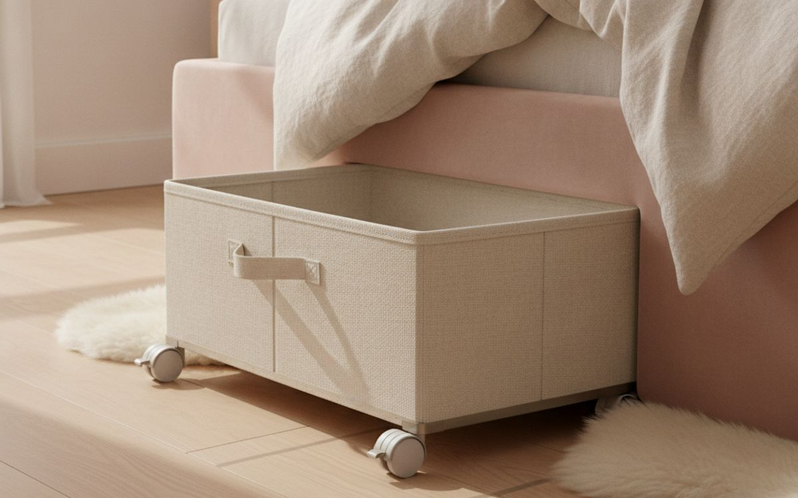
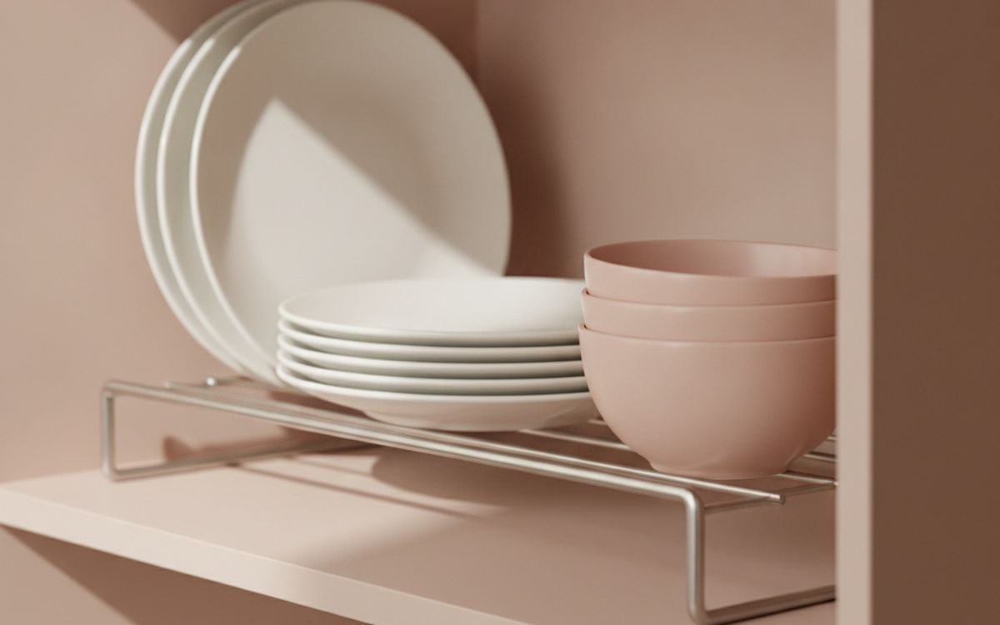
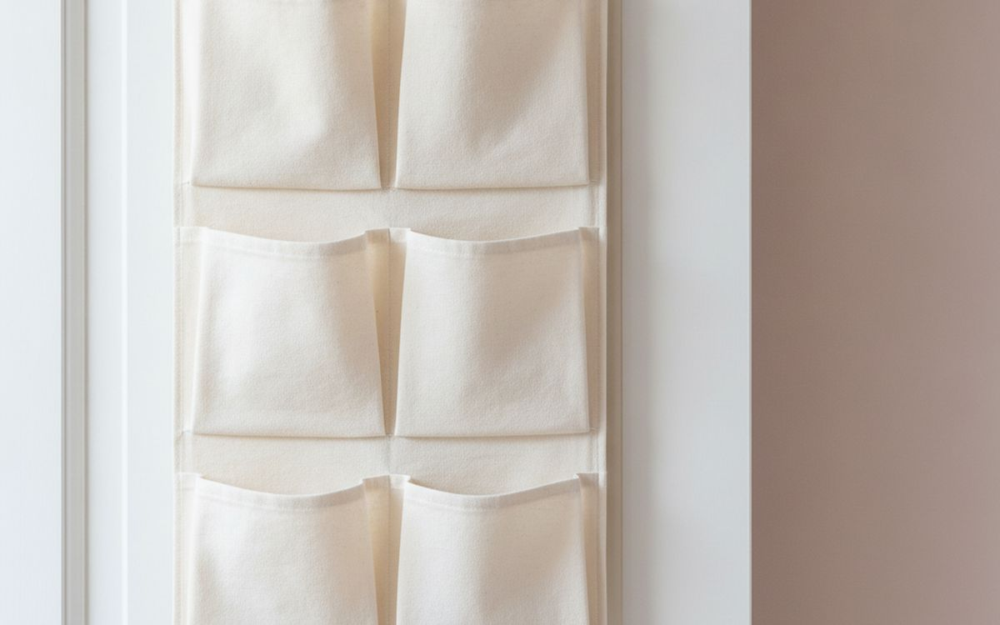
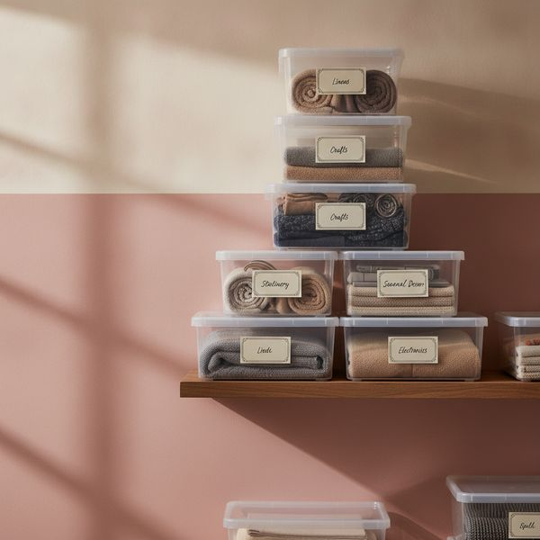
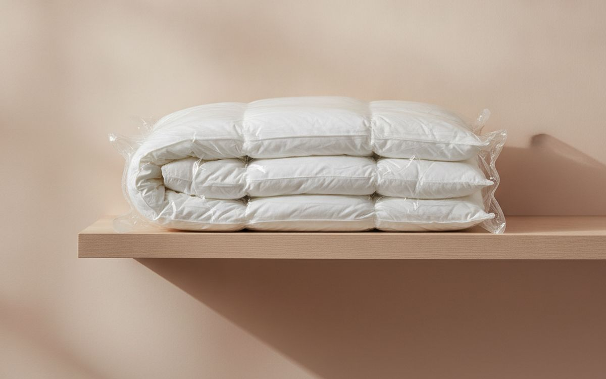
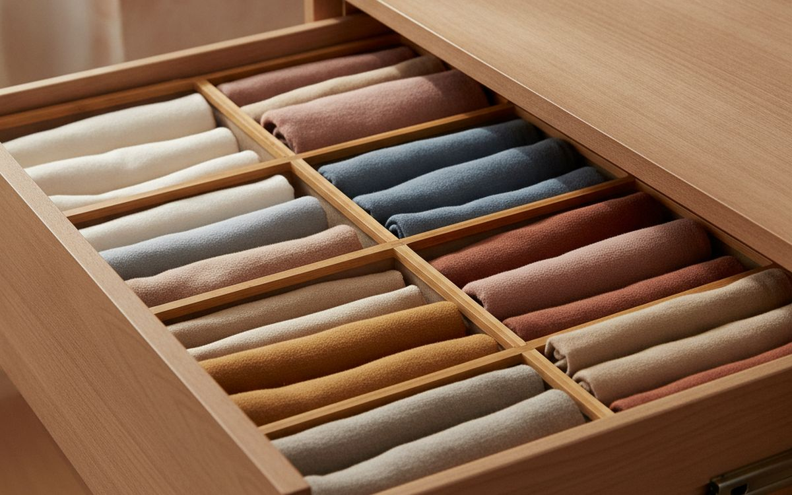
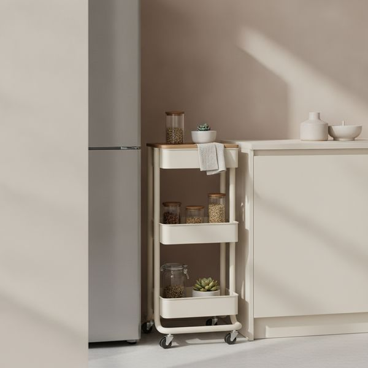
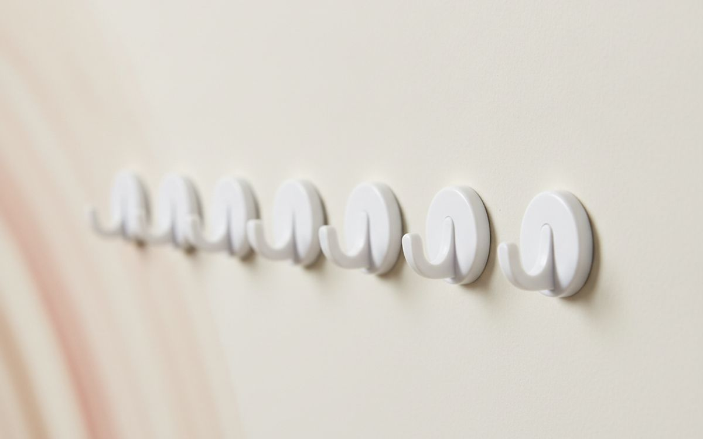
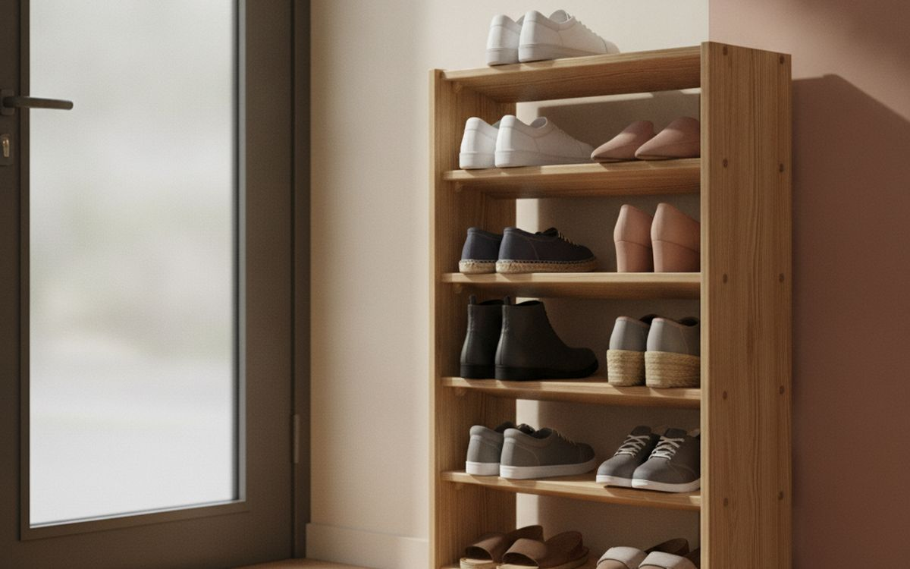
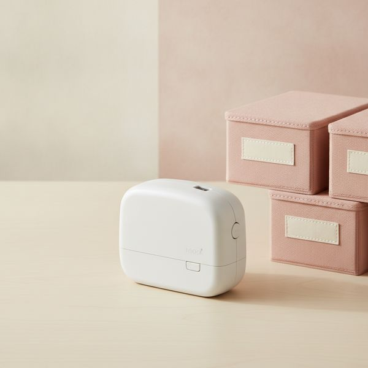

Δέκα προϊόντα που δημιουργούν πραγματικά χώρο, και μια ειλικρινής επισήμανση για εκείνα που απλώς κάνουν την ακαταστασία να φαίνεται πιο τακτοποιημένη.
Υπάρχει μια άβολη αλήθεια που κρύβεται πίσω από αυτή την κατηγορία προϊόντων: οι περισσότερες λύσεις αποθήκευσης δεν δημιουργούν χώρο, απλώς μεταφέρουν την ακαταστασία σε ένα πιο όμορφο κουτί. Αν αγοράσετε δώδεκα ίδια κουτιά για πράγματα που δεν χρησιμοποιείτε ποτέ, το αποτέλεσμα θα είναι ένα τακτοποιημένο ντουλάπι γεμάτο πράγματα που δεν χρησιμοποιείτε ποτέ.
Έτσι, η ειλικρινής εκδοχή αυτής της λίστας χωρίζεται στα δύο. Κάποια από τα παρακάτω προϊόντα προσθέτουν όντως αξιοποιήσιμο χώρο — κάθετο χώρο, ανεκμετάλλευτο χώρο, χώρο που ήδη έχετε αλλά δεν μπορείτε να φτάσετε. Άλλα απλώς κάνουν ένα υπάρχον σύστημα να λειτουργεί, κάτι για το οποίο αξίζει να πληρώσετε. Σημειώνουμε ποιο είναι ποιο.
Το πιο αποτελεσματικό βήμα δεν κοστίζει τίποτα: αποφασίστε τι θα φύγει πριν αποφασίσετε τι θα αγοράσετε. Μετρήστε τον χώρο μετά, όχι πριν, γιατί το πιο συνηθισμένο λάθος σε αυτή την κατηγορία είναι να αγοράζετε αποθηκευτικά μέσα που δεν χωράνε στο ράφι για το οποίο προορίζονταν.
Οι τιμές είναι κατά προσέγγιση κατά τη στιγμή της συγγραφής.
Γνωστοποίηση. Οι σύνδεσμοι σε αυτή τη σελίδα είναι συνδεδεμένοι. Αν αγοράσετε μέσω κάποιου, ενδέχεται να λάβουμε προμήθεια χωρίς επιπλέον κόστος για εσάς. Δεν επηρεάζει το τι μπαίνει στη λίστα ούτε τη σειρά της.
Πώς επιλέξαμε
Ξεχωρίζουμε τα προϊόντα που προσθέτουν πραγματικά αξιοποιήσιμο χώρο από εκείνα που απλώς τακτοποιούν, και το λέμε ξεκάθαρα αντί να τα παρουσιάζουμε όλα ως ίδια. Βασιζόμαστε σε δημοσιευμένες δοκιμές και μακροχρόνιες αναφορές κατόχων, και δεν έχουμε χρησιμοποιήσει προσωπικά κάθε προϊόν που αναφέρεται εδώ. Όπου η ειλικρινής συμβουλή είναι να ξεφορτωθείτε πράγματα ή να μετρήσετε αντί να αγοράσετε, αυτό ακριβώς κάνουμε.
Με μια ματιά
Οι τιμές είναι ενδεικτικές κατά τη συγγραφή και αλλάζουν συχνά.
Οι επιλογές

1
Χώρος που ήδη έχετεΚουτιά αποθήκευσης με ρόδες για κάτω από το κρεβάτι
$25–60
Ο χώρος κάτω από το κρεβάτι είναι συνήθως ο μεγαλύτερος ανεκμετάλλευτος όγκος σε ένα υπνοδωμάτιο, και μένει ανεκμετάλλευτος επειδή για να τον φτάσεις πρέπει να ξαπλώσεις στο πάτωμα. Οι ρόδες και η λαβή λύνουν ακριβώς αυτό το πρόβλημα, γι' αυτό και είναι η λύση που μετατρέπει πιο αξιόπιστα τον νεκρό χώρο σε χώρο που θα χρησιμοποιήσετε πραγματικά. Μετρήστε πρώτα το ύψος κάτω από το πλαίσιο του κρεβατιού σας, συμπεριλαμβανομένης τυχόν κεντρικής δοκού στήριξης που είναι χαμηλότερη από τα πλαϊνά — αυτή η δοκός είναι ο λόγος που επιστρέφονται πάρα πολλά από αυτά τα κουτιά. Προτιμήστε κουτιά με καπάκι, γιατί τα ανοιχτά κουτιά κάτω από το κρεβάτι μαζεύουν σκόνη με απίστευτο ρυθμό.
Γιατί είναι εδώ
- Μετατρέπει τον μεγαλύτερο νεκρό χώρο στα περισσότερα υπνοδωμάτια
- Οι ρόδες είναι ο λόγος που τελικά χρησιμοποιείται
- Φθηνά
Αξίζει να ξέρετε
- Οι κεντρικές δοκοί στήριξης του κρεβατιού αποτελούν παγίδα
- Τα ανοιχτά κουτιά γεμίζουν γρήγορα σκόνη

2
Διπλασιάζει ένα ντουλάπι οικονομικάΡυθμιζόμενα και στοιβαζόμενα ράφια-ενισχύσεις
$20–45
Τα περισσότερα ντουλάπια κουζίνας έχουν απόσταση μεταξύ των ραφιών που δεν έχει σχεδιαστεί για κάτι συγκεκριμένο, με αποτέλεσμα να υπάρχει ένα μεγάλο κενό πάνω από τα χαμηλά αντικείμενα και ο μισός όγκος να είναι αέρας. Ένα ράφι-ενίσχυση είναι ένα δεύτερο ράφι μέσα στο ράφι, και διπλασιάζει πραγματικά τη χωρητικότητα σε αυτό το τμήμα με πολύ λίγα χρήματα. Αυτή είναι η πιο ξεκάθαρη περίπτωση προϊόντος σε αυτή τη σελίδα που προσθέτει χώρο αντί να κρύβει την ακαταστασία. Επιλέξτε ρυθμιζόμενα ή στοιβαζόμενα για να προσαρμόζονται καθώς αλλάζουν τα πράγματα που αποθηκεύετε, και ελέγξτε το βάθος όσο και το ύψος — ένα ράφι που προεξέχει από την άκρη θα το χτυπάτε κάθε φορά που θα προσπαθείτε να πιάσετε κάτι.
Γιατί είναι εδώ
- Προσθέτει πραγματικά χωρητικότητα, όχι απλώς τάξη
- Πολύ φθηνά για τον όγκο που κερδίζετε
- Τα ρυθμιζόμενα προσαρμόζονται με τον καιρό
Αξίζει να ξέρετε
- Το βάθος μετράει όσο και το ύψος
- Οι φτηνές συρμάτινες εκδοχές κουνιούνται κάτω από το βάρος

3
Δωρεάν κάθετος χώροςΓάντζοι πόρτας και κρεμαστή θήκη οργάνωσης
$15–40
Το πίσω μέρος κάθε πόρτας σε ένα σπίτι είναι μια ολόκληρη κάθετη επιφάνεια που δεν κάνει τίποτα. Οι γάντζοι πόρτας δεν χρειάζονται στερέωση ούτε άδεια, γεγονός που τους καθιστά την προφανή πρώτη κίνηση σε ένα ενοικιαζόμενο διαμέρισμα. Μια κρεμαστή θήκη οργάνωσης με τσέπες μετατρέπει την ίδια περιοχή σε χώρο αποθήκευσης για παπούτσια, καθαριστικά ή αξεσουάρ. Δύο πρακτικοί περιορισμοί. Ελέγξτε το βάθος του γάντζου σε σχέση με το πάχος της πόρτας σας, γιατί οι σύγχρονες πόρτες είναι συχνά πιο λεπτές από ό,τι υποθέτουν οι γάντζοι. Και μια φορτωμένη θήκη εμποδίζει πολλές πόρτες να κλείνουν εντελώς, κάτι που δεν πειράζει σε ένα ντουλάπι αλλά είναι ενοχλητικό στην πόρτα του μπάνιου.
Γιατί είναι εδώ
- Χωρίς τρύπημα, χωρίς να χρειάζεται άδεια από τον ιδιοκτήτη
- Αξιοποιεί χώρο που αλλιώς πάει εντελώς χαμένος
- Φθηνά και άμεσα αναστρέψιμα
Αξίζει να ξέρετε
- Το βάθος του γάντζου συχνά δεν ταιριάζει με τις σύγχρονες πόρτες
- Μια φορτωμένη θήκη εμποδίζει την πόρτα να κλείσει εντελώς

4
Το διάφανο κερδίζει το όμορφοΔιάφανα, στοιβαζόμενα κουτιά με ετικέτες
$40–90 for a set
Τα αδιαφανή κουτιά είναι το μέρος όπου τα αντικείμενα πηγαίνουν για να ξεχαστούν, και τα ξεχασμένα αντικείμενα αγοράζονται ξανά. Διάφανες πλευρές συν μια γραπτή ετικέτα στο μπροστινό μέρος είναι ένας βαρετός συνδυασμός που λύνει εντελώς αυτό το πρόβλημα. Αγοράστε ένα ή δύο μεγέθη αντί για οκτώ, γιατί τα κουτιά που στοιβάζονται καλά είναι πολύ πιο χρήσιμα από κουτιά που μεμονωμένα ταιριάζουν καλύτερα — μια στοίβα λειτουργεί μόνο αν τα καπάκια είναι επίπεδα και οι βάσεις ταιριάζουν. Βάλτε ετικέτα στην μπροστινή όψη, όχι στο καπάκι, αφού ένα κουτί σε μια στοίβα δείχνει το μπροστινό του μέρος και ποτέ το πάνω. Αποφύγετε οτιδήποτε με διακοσμητική υφή· θέλετε να βλέπετε μέσα.
Γιατί είναι εδώ
- Βλέπεις τι έχει μέσα, οπότε το χρησιμοποιείς
- Τα ομοιόμορφα μεγέθη στοιβάζονται σωστά
- Φθηνά και ατελείωτα επαναχρησιμοποιήσιμα
Αξίζει να ξέρετε
- Το διάφανο πλαστικό είναι λιγότερο ελκυστικό σε ανοιχτά ράφια
- Τα ανάμεικτα μεγέθη ακυρώνουν τον σκοπό

5
Ιδανικές για δύο πράγματα, κακές για άλλαΣακούλες συμπίεσης κενού, μόνο για κλινοσκεπάσματα
$25–50
Για ένα εφεδρικό πάπλωμα, χειμωνιάτικα παλτό ή έναν υπνόσακο, είναι εξαιρετικές — τα κλινοσκεπάσματα είναι κυρίως παγιδευμένος αέρας, και η αφαίρεσή του μειώνει τον όγκο κατά δύο τρίτα. Αυτό είναι πραγματικό κέρδος χώρου, όχι απλή τακτοποίηση. Προσέξτε όμως τι άλλο βάζετε μέσα. Τα πούπουλα χάνουν τον όγκο τους αν συμπιεστούν για πολλούς μήνες, οι φυσικές ίνες όπως το μαλλί και το δέρμα δεν αντέχουν τη μακρά συμπίεση, και οτιδήποτε είναι ελαφρώς νωπό όταν σφραγιστεί θα βγει μυρίζοντας μούχλα. Χρησιμοποιήστε τις για εποχιακά κλινοσκεπάσματα, αποθηκεύστε τις επίπεδες αντί για διπλωμένες, και αφήστε το περιεχόμενο να αεριστεί για μια μέρα μετά το άνοιγμα.
Γιατί είναι εδώ
- Μειώνει τον όγκο των κλινοσκεπασμάτων κατά περίπου δύο τρίτα
- Πραγματικό κέρδος χώρου, όχι απλή τακτοποίηση
- Προστατεύει από σκόνη και σκόρο
Αξίζει να ξέρετε
- Η μακρά συμπίεση καταστρέφει τα πούπουλα και τις φυσικές ίνες
- Οτιδήποτε σφραγιστεί νωπό θα μυρίζει μούχλα

6
Κάνει ένα υπάρχον σύστημα να λειτουργείΔιαχωριστικά συρταριών
$20–45
Ένα βαθύ συρτάρι χωρίς διαχωριστικά γίνεται ένας ενιαίος σωρός μέσα σε δύο εβδομάδες, ανεξάρτητα από το πόσο προσεκτικά το τακτοποιήσατε, γιατί όταν βγάζετε ένα πράγμα, ανακατεύετε όλα τα υπόλοιπα. Τα διαχωριστικά μετατρέπουν ένα δοχείο σε πολλά, οπότε η αφαίρεση ενός αντικειμένου αφήνει τα άλλα ανενόχλητα. Αυτό, ειλικρινά, ανήκει στη δεύτερη κατηγορία — δεν προσθέτει χώρο, απλώς κάνει τον χώρο που έχετε να παραμένει λειτουργικός. Τα διαχωριστικά με ελατήριο ή τα ρυθμιζόμενα ταιριάζουν χωρίς εργαλεία και προσαρμόζονται σε διαφορετικά συρτάρια. Σε συνδυασμό με το κάθετο δίπλωμα των ρούχων ώστε να βλέπετε την άκρη κάθε αντικειμένου αντί να τα στοιβάζετε, είναι η μεγαλύτερη βελτίωση που μπορείτε να κάνετε σε μια ντουλάπα.
Γιατί είναι εδώ
- Εμποδίζει ένα συρτάρι να γίνει ένας σωρός
- Τα ρυθμιζόμενα δεν χρειάζονται εργαλεία
- Συνδυάζεται καλά με το κάθετο δίπλωμα
Αξίζει να ξέρετε
- Προσθέτει οργάνωση, όχι χωρητικότητα
- Τα διαχωριστικά με ελατήριο γλιστρούν σε πολύ βαθιά συρτάρια

7
Αξιοποιεί ένα κενό όπου δεν χωράει τίποτα άλλοΛεπτό καρότσι με ρόδες για στενά κενά
$35–70
Οι περισσότερες κουζίνες και μπάνια έχουν ένα νεκρό κενό δεκαπέντε με είκοσι εκατοστών δίπλα σε μια συσκευή ή ένα ντουλάπι, πολύ στενό για οτιδήποτε και πολύ φαρδύ για να το αγνοήσεις. Ένα λεπτό καρότσι με ρόδες είναι ειδικά φτιαγμένο γι' αυτό ακριβώς το κενό και το μετατρέπει σε τρία χρήσιμα ράφια. Οι ρόδες είναι που το κάνουν να λειτουργεί, γιατί η πρόσβαση από το πλάι είναι όλο το πρόβλημα. Μετρήστε το κενό στο επίπεδο του πατώματος και στο ύψος του πάγκου, καθώς τα σοβατεπί και οι σωληνώσεις συχνά κάνουν το ωφέλιμο πλάτος στενότερο από το ορατό — αυτή η διαφορά είναι ο πιο συνηθισμένος λόγος που επιστρέφονται αυτά τα προϊόντα.
Γιατί είναι εδώ
- Μετατρέπει ένα πραγματικά νεκρό κενό σε τρία ράφια
- Οι ρόδες λύνουν το πρόβλημα της πρόσβασης
- Μετακινείται για καθάρισμα
Αξίζει να ξέρετε
- Τα σοβατεπί και οι σωληνώσεις στενεύουν το πραγματικό κενό
- Τα φορτωμένα καρότσια μετακινούνται δύσκολα σε μαλακά πατώματα

8
Το καλύτερο για ενοικιαστέςΑυτοκόλλητοι γάντζοι τύπου Command
$12–30
Για όποιον δεν μπορεί να τρυπήσει, αυτοί οι γάντζοι μετατρέπουν τον χώρο του τοίχου σε χώρο για κρέμασμα και αφαιρούνται χωρίς να παίρνουν μαζί τους τη μπογιά, υπό την προϋπόθεση ότι ακολουθείτε δύο κανόνες που ο κόσμος συνήθως αγνοεί. Καθαρίστε την επιφάνεια με οινόπνευμα εντριβής αντί για ένα οικιακό σπρέι, γιατί τα περισσότερα καθαριστικά αφήνουν υπολείμματα στα οποία η κόλλα δεν μπορεί να πιάσει. Και περιμένετε μία ώρα πριν κρεμάσετε οτιδήποτε. Σεβαστείτε το δηλωμένο όριο βάρους με μεγάλο περιθώριο, και σημειώστε ότι έχουν κακή απόδοση σε ανάγλυφες ταπετσαρίες, φρεσκοβαμμένους τοίχους και σε μπάνια με υδρατμούς — τρία μέρη όπου ο κόσμος τους βάζει και μετά παραπονιέται.
Γιατί είναι εδώ
- Χωρίς τρύπημα, και αφαιρούνται καθαρά
- Ιδανικοί για ενοικιαζόμενα διαμερίσματα
- Φθηνοί και άμεσα αναστρέψιμοι
Αξίζει να ξέρετε
- Αποτυγχάνουν σε ανάγλυφες ταπετσαρίες και σε δωμάτια με υδρατμούς
- Λειτουργούν μόνο αν η επιφάνεια προετοιμαστεί με οινόπνευμα

9
Διορθώνει τον σωρό που όλοι έχουνΜια παπουτσοθήκη δίπλα στην πόρτα
$30–80
Ο σωρός με τα παπούτσια μέσα στην εξώπορτα είναι μια από τις πιο καθολικές αποτυχίες αποθήκευσης, και συμβαίνει για έναν απλό λόγο: ο αποθηκευτικός χώρος είναι αλλού και τα παπούτσια βγαίνουν εδώ. Το να βάλετε μια παπουτσοθήκη ακριβώς εκεί που βγάζετε τα παπούτσια λύνει το πρόβλημα, και καμία οργάνωση ντουλάπας δεν θα το κάνει. Οι παπουτσοθήκες με επίπεδα ή με κλίση χωράνε πολύ περισσότερα στην ίδια επιφάνεια πατώματος από μια απλή σειρά. Να είστε ρεαλιστές με τη χωρητικότητα — μετρήστε τα ζευγάρια που κυκλοφορούν πραγματικά, όχι τα ζευγάρια που έχετε, και προσθέστε μερικά ακόμα. Μια παπουτσοθήκη που είναι πάντα γεμάτη, σταματά να χρησιμοποιείται μέσα σε ένα μήνα.
Γιατί είναι εδώ
- Τοποθετεί την αποθήκευση εκεί που συμβαίνει η συμπεριφορά
- Τα σχέδια με επίπεδα χωράνε πολύ περισσότερα ανά επιφάνεια
- Φθηνή
Αξίζει να ξέρετε
- Οι μικρές παπουτσοθήκες εγκαταλείπονται γρήγορα
- Τα βρεγμένα παπούτσια χρειάζονται έναν δίσκο από κάτω

10
Ο μαρκαδόρος κάνει σχεδόν την ίδια δουλειάΈνας ετικετογράφος, ή ένας μαρκαδόρος
$0–50
Η τοποθέτηση ετικετών είναι αυτό που κάνει ένα σύστημα αποθήκευσης να επιβιώνει από την επαφή με τους άλλους ανθρώπους στο σπίτι, γιατί ένα σύστημα υπάρχει μόνο αν όλοι μπορούν να δουν τι είναι. Αυτή είναι η πραγματική λειτουργία — όχι η καλαισθησία, αλλά η κοινή αναγνωσιμότητα. Ένας ετικετογράφος είναι ευχάριστος στη χρήση και παράγει κάτι ανθεκτικό, και ένας μαρκαδόρος σε χαρτοταινία κάνει το ενενήντα τοις εκατό της ίδιας δουλειάς τζάμπα και αλλάζει πολύ πιο εύκολα όταν αλλάζει το περιεχόμενο. Αγοράστε το μηχάνημα αν το να το έχετε σας κάνει όντως να βάζετε ετικέτες, κάτι που για μερικούς ανθρώπους ισχύει πραγματικά. Διαφορετικά, ο μαρκαδόρος είναι η σωστή απάντηση.
Γιατί είναι εδώ
- Κάνει ένα σύστημα αναγνώσιμο σε όλο το νοικοκυριό
- Η ταινία και ο μαρκαδόρος δεν κοστίζουν τίποτα και αλλάζουν εύκολα
- Μετατρέπει ένα τακτοποιημένο ντουλάπι σε ένα χρηστικό
Αξίζει να ξέρετε
- Οι ετικετογράφοι χρειάζονται ειδικές κασέτες ταινίας
- Οι τυπωμένες ετικέτες είναι ενοχλητικές στην ενημέρωση
Συχνές ερωτήσεις
Η αποθήκευση δημιουργεί όντως χώρο;
Κάποια είδη ναι — τα ράφια-ενισχύσεις, τα κουτιά για κάτω από το κρεβάτι, τα λεπτά καρότσια και οι σακούλες κενού χρησιμοποιούν όγκο που ήδη έχετε αλλά δεν μπορείτε να φτάσετε. Τα διαχωριστικά, οι ετικέτες και τα ταιριαστά καλάθια οργανώνουν αντί να επεκτείνουν. Και τα δύο αξίζει να τα αγοράσετε· απλώς να ξέρετε τι παίρνετε.
Τι πρέπει να κάνω πριν αγοράσω οτιδήποτε;
Αποφασίστε τι θα φύγει, και μετά μετρήστε. Το να αγοράζετε πρώτα τα δοχεία είναι ο λόγος που οι άνθρωποι καταλήγουν με αποθηκευτικά μέσα που δεν χωράνε και ένα ντουλάπι γεμάτο πράγματα που πάλι δεν χρησιμοποιούν.
Είναι οι σακούλες κενού ασφαλείς για όλα τα ρούχα;
Όχι. Είναι εξαιρετικές για εφεδρικά κλινοσκεπάσματα και συνθετικά παλτό. Τα πούπουλα χάνουν τον όγκο τους κάτω από μακρά συμπίεση, το μαλλί και το δέρμα δεν την αντέχουν, και οτιδήποτε σφραγιστεί ελαφρώς νωπό θα μυρίζει μούχλα όταν το ανοίξετε.
Ενοικιάζω και δεν μπορώ να τρυπήσω. Ποιες είναι οι επιλογές μου;
Οι γάντζοι πόρτας, οι αυτοκόλλητοι γάντζοι, οι ράβδοι τάσης, οι αυτόνομες ραφιέρες και τα κουτιά για κάτω από το κρεβάτι καλύπτουν τις περισσότερες ανάγκες χωρίς ούτε μία τρύπα. Προετοιμάστε τις αυτοκόλλητες επιφάνειες με οινόπνευμα και σεβαστείτε τα όρια βάρους και θα κρατήσουν καλά.
← Όλοι οι οδηγοί
Έχουμε υποβάλει αίτηση για το Πρόγραμμα Συνεργατών της Amazon. Δεν είμαστε ακόμη Συνεργάτες της Amazon και δεν κερδίζουμε τίποτα από συνδέσμους Amazon. Ως συνεργάτες της AliExpress, κερδίζουμε από επιλέξιμες αγορές. Οι τιμές και η διαθεσιμότητα ισχύουν κατά την ημερομηνία δημοσίευσης και ενδέχεται να αλλάξουν.